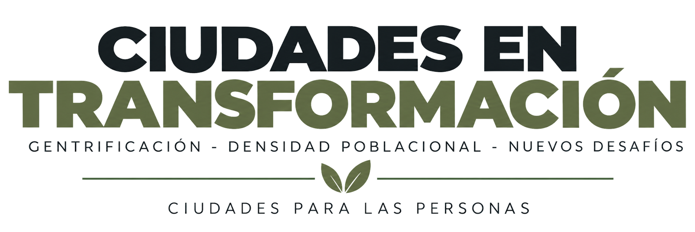

Esta conferencia será impartida por el Arquitecto David Fernando Rosales Bolaños y permitirá introducir a los participantes en la temática general del simposio, proporcionando una visión amplia sobre el fenómeno de la gentrificación, sus características y su relación con las transformaciones demográficas y urbanas.
Esta conferencia será impartida por el Arquitecto Ruben Homar Cifuentes Velasco y abordará los efectos que los procesos de transformación urbana pueden generar sobre la población, las comunidades y las dinámicas sociales dentro de un contexto local.
Esta conferencia será impartida por el Arquitecto Fernando Cano Jerez y abordará la relación entre el crecimiento urbano, la ocupación del territorio, la concentración de edificaciones y las transformaciones físicas que pueden producirse dentro de determinados sectores urbanos.
La conferencia permitirá abordar criterios generales relacionados con el análisis estructural de edificaciones verticales y su importancia dentro de los procesos de crecimiento y densificación de las ciudades.